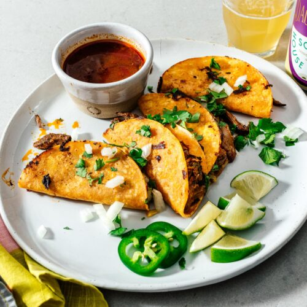

Mexican Street Tacos

Description:
Tacos are a traditional mexican dish that have been very popular even in the U.S. and adapted to many other cultures as well.
Tacos are an easy and fast dish to make with ingredients that may be lying in anybody's fridge or freezer at any moment which make it
something that is practical and convenient for dinner.
Ingredients:
- Mini Flour Tortillas
- Skirt Steak
- Limes
- Garlic
- Red Onion
- Cumin
- Chili Powder
- Oregano
- Cilantro
- Olive Oil
Steps:
- First you are going to want to thinly slice and prep the skirt steak.
- Now, you will want to season the skirt steak with chopped garlic cloves, cumin, chili powder, oregano, cilantro, and olive oil.
- Let the meat marinate for at least 1 hour in the refrigerator before cooking.
- Cook the steak on a cast iron pan to a nice medium-well.
- After taking off the pan, let it rest, cut it up, and start prepping the flour tortillas by heating them on a pan at medium to high heat.
- Now, place the tortillas on a plate, and place the steak along with cilantro and chopped red onion on the taco, add some lime juice and enjoy.